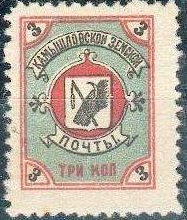

Return To Catalogue - Go to Zemstvos overview - Russia
Note: on my website many of the
pictures can not be seen! They are of course present in the
catalogue;
contact me if you want to purchase it.
1903 Arms, perforated

3 k black, blue and red (exists imperforated) 3 k black, blue and lilac (1909) 3 k black, grey and red (1912) 3 k black, yellow and red (1915) 3 k black, green and red (1915)
1907 Arms, perforated
2 k blue
1869 Diamond shaped stamp, text, imperforated
(-) black 3 k black (1870, 2 types; '3' different)
1875 Circle, embossed value on colour, imperforated

3 k blue
1875 Text in circle, imperforated
3 k lilac
1895 Arms, perforated
3 k blue on yellow 3 k blue
1870 Arms
5 k red (imperforated, with black diagonal overprint, 1870) 5 k blue (imperforated, 1870) 5 k red (perforated, larger size, with black overprint, 1876) 5 k blue (perforated, 1882) 5 k red (perforated, without overprint, 1885) 5 k blue and bronze (perforated, 1887) 5 k bronze and blue (perforated, 1888) 5 k blue and bronze (perforated, '5' in upper part, 1889) 5 k blue (perforated, '5' in upper part, 1890) 5 k red and orange (perforated, 1892) 5 k blue and silver (perforated, 1892) 5 k blue and bronze (perforated, '5' in upper part, '5 k' in corners, 1893) 5 k orange and blue (perforated, 1895) 5 k blue and orange (perforated, white '5k' in corners, 1896) 5 k red and brozne (perforated, white '5k' in corners, 1902)
Note: reprints of Kherson exist! See for example: http://www.tu-harburg.de/~emog/aiep/forgeries_eng.htm.
1867 Arms, imperforated

10 k orange
1871 Arms, horse and man in circle, perforated

10 k red and black (1871, 2 types) 10 k red and black (smaller design, 1872, 2 types)
1881 Arms, horse, man and double-headed eagle, perforated
10 k orange, brown and blue
1891 Arms, double headed eagle, perforated

5 k green (1895) 5 k blue (1909) 10 k blue and bronze
(Imperforate proof of the 5 k value in red)
1906 Arms, perforated


1 k brown 1 k red (1911) 3 k green 3 k blue (1911)


{kind=link}
{kind=link}